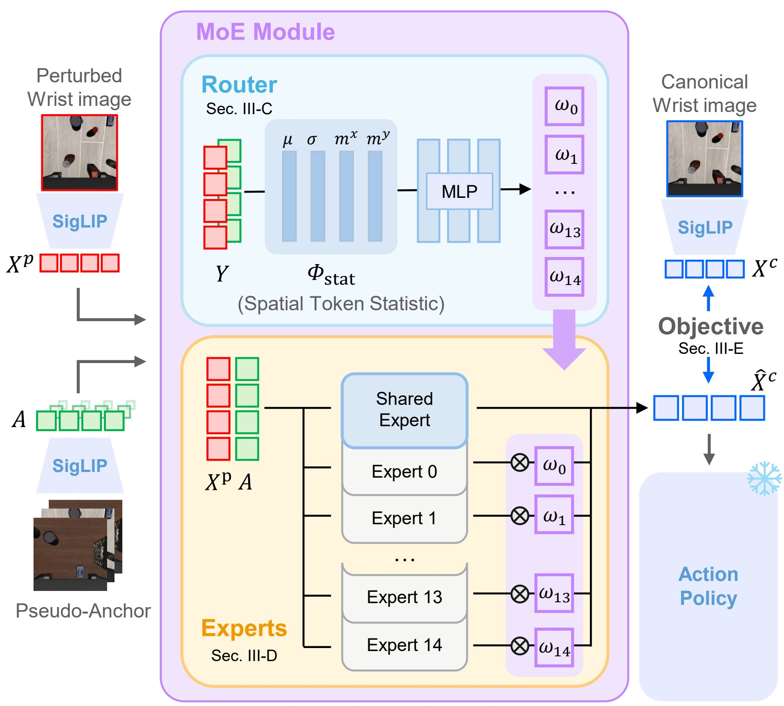
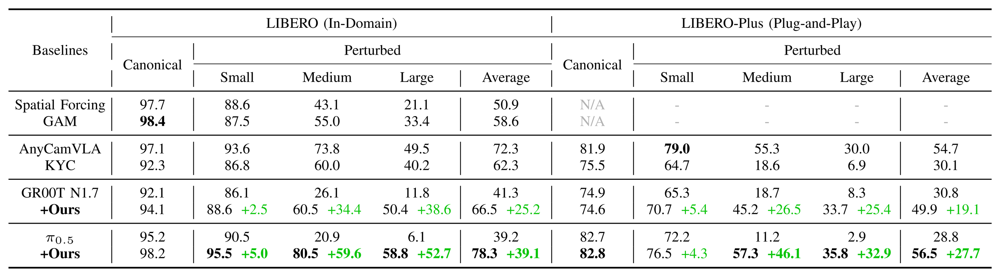
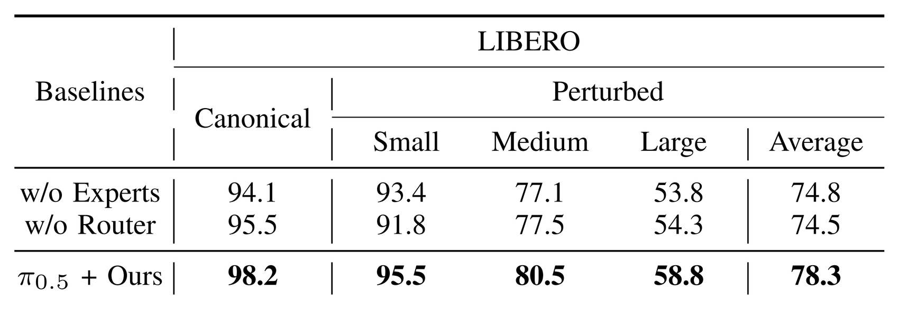

Overview of WARP-VLA. (a) Wrist-camera changes degrade VLA performance. (b) Existing methods rely on novel view synthesis or explicit camera geometry. (c) WARP-VLA aligns perturbed wrist features to the canonical feature space with an anchor-guided MoE — no calibration, no policy fine-tuning. (d) Real-robot deployment.
Abstract
Despite recent advances in Vision-Language-Action models (VLAs) for robotic manipulation, their performance remains sensitive to changes in camera configuration. The problem becomes more evident in cross-setup deployment, as reproducing the exact camera pose used for training is nearly impossible. Unlike fixed external views, wrist views are more challenging because the camera moves with the robot, causing even small mounting variations to alter fine-grained geometric cues. To address this, we propose WARP-VLA, a camera-view-robust VLA for diverse wrist camera configurations. WARP-VLA adopts a Mixture-of-Experts (MoE) architecture where individual experts learn view-specific feature transformations, and a router combines them based on implicit view information. This allows the policy to be deployed without requiring camera extrinsic parameters as additional input. Through experiments on the LIBERO benchmark, WARP-VLA improves the average success rate of π0.5 from 39.2% to 78.3% under wrist-view perturbations. The real-robot experiments further show that the feature-level adaptation learned in simulation successfully transfers to diverse deployment settings.
Video
Method

Encode. The frozen SigLIP encoder turns the perturbed wrist image into tokens Xp. A pseudo-canonical anchor A, averaged over the policy’s canonical fine-tuning data, serves as the reference view.
Route. Channel mean, standard deviation, and spatial moments (μ, σ, mx, my) of Xp−A and A tell the router how far the view deviates; an MLP predicts expert weights ω for translation and tilt groups — no camera parameters.
Transform. Each expert is a cross-attention Transformer (perturbed tokens as queries, anchor as keys and values) built from a shared transformation plus a LoRA-style residual. Outputs are mixed by ω into canonical-like features X̂c.
Act.X̂c is trained to match paired canonical features Xc with the encoder and policy frozen. At deployment it simply replaces the wrist tokens — no policy fine-tuning.
Results

Success rates (%) under wrist-view perturbations on LIBERO and LIBERO-Plus. Green numbers show the gain of +Ours over each base policy.
Simulation Rollouts
Same wrist-camera perturbation for every model. ✓ success · ✗ failure
LIBERO
LIBERO-Plus (large perturbation)
Real Robot
Put the ball in the cup
More tasks
Same wrist-camera perturbation for every model. ✓ success · ✗ failure
Ablation

Ablations on LIBERO. Removing the view-specific experts or the learned router lowers robustness.